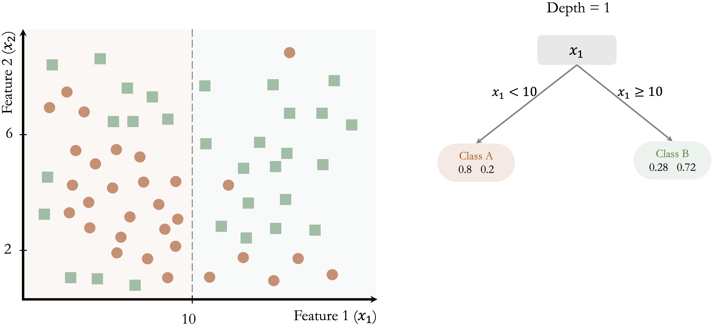

11 Decision Trees and Random Forests
When one door closes, another opens.
Banks routinely evaluate loan applications based on information such as income, age, credit history, and debt-to-income ratio. Online retailers, in turn, recommend products by learning patterns in customer preferences and past behavior. In many such settings, decisions can be modeled using decision trees, which represent predictive rules in a transparent, stepwise structure.
Decision trees are used across diverse domains, including medical diagnosis, fraud detection, customer segmentation, and process automation. Their main advantage is interpretability: the model can be expressed as a sequence of simple splitting rules that can be inspected and communicated. A limitation, however, is that a single tree can overfit the training data by adapting too closely to noise rather than capturing stable patterns. Random forests address this issue by aggregating many trees to obtain predictions that are typically more accurate and less variable.
In Chapter 10, we focused on regression models for continuous outcomes. We now turn to tree-based models, which provide a unified framework for both classification and regression. Trees can predict categorical outcomes such as churn or default, as well as continuous outcomes such as house prices or sales revenue. Because they can capture nonlinear relationships and interactions without requiring an explicit functional form, tree-based models offer a flexible and widely used approach to supervised learning.
Figure 11.1 illustrates a classification tree trained on the risk dataset introduced in Chapter 9. The model predicts whether a customer is classified as a “good” or “bad” credit risk based on features such as age and income. Internal nodes represent splitting rules, and terminal nodes (leaves) provide the predicted class together with class probabilities.
In the remainder of this chapter, we explain how decision trees are constructed, how their complexity can be controlled, and how ensemble methods such as random forests improve generalization. The chapter continues the modeling strand of the Data Science Workflow introduced in Chapter 2, building on earlier classification methods (Chapters 7 and 9), regression models (Chapter 10), and evaluation tools (Chapter 8). Together, these methods introduce decision trees and random forests as non-parametric models that can be applied to both classification and regression tasks.
What This Chapter Covers
This chapter extends the modeling techniques introduced earlier by focusing on tree-based methods for supervised learning. Decision trees provide a flexible, non-parametric framework for modeling both classification and regression problems, allowing complex relationships and interactions to be captured without specifying a predefined functional form. Ensemble extensions such as random forests further enhance predictive performance by reducing variance and improving generalization.
We begin by examining how decision trees construct predictions through recursive data partitioning, leading to increasingly homogeneous subsets. Two widely used algorithms, CART and C5.0, are introduced and compared in terms of their splitting criteria, tree structure, and practical behavior. The chapter then introduces random forests as an ensemble approach that combines many decision trees to achieve more robust predictions.
Throughout the chapter, these methods are illustrated using real-world datasets on credit risk, income prediction, and customer churn. Practical emphasis is placed on interpreting decision rules, controlling model complexity, tuning key hyperparameters, and evaluating performance using tools such as confusion matrices, ROC curves, and variable importance measures.
By the end of this chapter, readers will be able to build, interpret, and evaluate tree-based models for both categorical and continuous outcomes, and to assess when decision trees or random forests provide an appropriate balance between interpretability and predictive accuracy.
11.1 How Decision Trees Work
This section introduces the fundamental principles behind decision trees, focusing on how trees are constructed, how they generate predictions, and how their complexity can be controlled. We illustrate these ideas using a simple two-dimensional example before returning to real-world applications later in the chapter.
A decision tree makes predictions by recursively partitioning the data into increasingly homogeneous subsets based on feature values. At each step, the algorithm selects a splitting rule that best separates the observations according to the target variable, gradually forming a hierarchical structure of decision rules. This recursive partitioning strategy enables decision trees to model both categorical and continuous outcomes within a unified framework.
The quality of each split is assessed using a criterion such as the Gini Index or Entropy, which quantify how well the resulting subsets concentrate observations from the same class. Tree growth continues until a stopping criterion is met, such as a maximum tree depth, a minimum number of observations in a node, or insufficient improvement in the splitting criterion.
To illustrate the construction process, consider a toy dataset with two features (\(x_1\) and \(x_2\)) and two classes (Class A and Class B), shown in Figure 11.2. The dataset contains 50 observations, and the objective is to separate the two classes using a sequence of decision rules.

The algorithm begins by identifying the feature and threshold that best separate the two classes. The split at \(x_1 = 10\) yields the greatest improvement in class homogeneity: in the left region (\(x_1 < 10\)), 80% of observations belong to Class A, whereas in the right region (\(x_1 \geq 10\)), 72% belong to Class B.
This initial partition is shown in Figure 11.3. Although this split improves class separation, overlap between the classes remains. The algorithm therefore continues splitting the data by introducing additional decision rules based on \(x_2\), resulting in smaller and more homogeneous regions.

In Figure 11.4, further splits at \(x_2 = 6\) and \(x_2 = 8\) refine the classification, improving the separation between the two classes.

This recursive process continues until a stopping criterion is reached. Figure 11.5 shows a fully grown tree with depth 5, where the decision boundaries closely follow the training data.
While such a deep tree can perfectly classify the training data, it often captures noise in addition to meaningful structure. As a result, its predictive performance on new data may deteriorate, a phenomenon known as overfitting. The following subsections explain how predictions are made and how tree complexity can be managed to mitigate this issue.
Making Predictions with a Decision Tree
Once a decision tree has been constructed, predictions are obtained by traversing the tree from the root node to a terminal leaf. At each internal node, the observation is routed according to the splitting rule, progressively narrowing the set of possible outcomes. For classification tasks, the predicted class corresponds to the majority class among the training observations in the terminal node. For regression tasks, the prediction is given by the average response value of the observations in that leaf.
For example, consider a new observation with \(x_1 = 8\) and \(x_2 = 4\) in Figure 11.4. The tree assigns a class label by following these steps:
Since \(x_1 = 8\), the observation is routed to the left branch (\(x_1 < 10\)).
Since \(x_2 = 4\), it proceeds to the lower-left region (\(x_2 < 6\)).
The terminal node assigns the observation to Class A with an estimated probability of 80%.
This explicit sequence of decision rules illustrates the interpretability of decision trees. Each prediction can be traced back to a small number of human-readable conditions, making tree-based models particularly valuable in applications where transparency and explanation are essential.
Controlling Tree Complexity
A decision tree that fits the training data extremely well may nevertheless perform poorly on unseen data. This phenomenon, known as overfitting, occurs when the model adapts too closely to idiosyncrasies of the training set and captures noise rather than underlying structure.
To mitigate overfitting, decision trees incorporate mechanisms that control model complexity and promote generalization. These mechanisms regulate how deeply the tree grows and how detailed the resulting decision rules become.
One such mechanism is pre-pruning, which constrains tree growth during training. The algorithm stops splitting when predefined limits are reached, such as a maximum tree depth, a minimum number of observations per node, or insufficient improvement in the splitting criterion. By imposing these constraints early, pre-pruning prevents the tree from becoming overly complex.
An alternative strategy is post-pruning, in which the tree is first grown to its full size and then simplified. After training, branches that contribute little to predictive performance are removed or merged based on validation criteria. Post-pruning often yields smaller trees that generalize better while retaining interpretability.
The choice between pre-pruning and post-pruning depends on the dataset and modeling objectives. In both cases, the splitting criteria used during tree construction, such as the Gini Index or Entropy, play a central role in shaping the final tree structure. These criteria are examined in more detail in the next section.
11.2 How CART Builds Decision Trees
CART (Classification and Regression Trees), introduced by Breiman et al. in 1984 (Breiman et al. 1984), is one of the most influential algorithms for constructing decision trees and remains widely used in both research and practice. This section explains the key principles underlying CART and highlights its strengths and limitations.
CART constructs binary trees, meaning that each internal node splits the data into exactly two child nodes. Tree construction proceeds recursively by selecting, at each node, the feature and split point that best separate the observations with respect to the target variable. The objective is to create child nodes that are increasingly homogeneous.
For classification tasks, CART typically measures node impurity using the Gini index, defined as \[ Gini = 1 - \sum_{i=1}^k p_i^2, \] where \(p_i\) denotes the proportion of observations in the node belonging to class \(i\), and \(k\) is the number of classes. A node is considered pure when all observations belong to a single class, yielding a Gini index of zero. During tree construction, CART selects the split that maximizes the reduction in impurity, thereby producing two child nodes that are more homogeneous than the parent node.
Because CART applies this splitting process recursively, it can generate highly detailed trees that fit the training data extremely well. While this reduces training error, it also increases the risk of overfitting. CART therefore incorporates pruning to control model complexity. After a large tree is grown, branches that contribute little to predictive performance are removed based on a complexity penalty that balances goodness of fit against tree size. The resulting pruned tree is typically smaller, easier to interpret, and better able to generalize to new data.
CART is widely used because of its interpretability, flexibility, and ability to handle both classification and regression problems within a single framework. The tree structure provides a clear representation of decision rules, and the algorithm accommodates both numerical and categorical predictors without requiring extensive preprocessing.
At the same time, CART has well-known limitations. The greedy nature of its splitting strategy means that locally optimal splits do not necessarily lead to a globally optimal tree. In addition, when the data are noisy or the sample size is small, CART may still produce unstable trees that vary substantially with small changes in the data.
These limitations have motivated the development of more advanced tree-based methods. Algorithms such as C5.0 refine splitting and pruning strategies, while random forests reduce variance by aggregating predictions from many trees. The next sections build on the CART framework to introduce these extensions.
11.3 C5.0: More Flexible Decision Trees
C5.0, developed by J. Ross Quinlan, extends earlier decision tree algorithms such as ID3 and C4.5 by introducing more flexible splitting strategies and improved computational efficiency. Compared with CART, C5.0 is designed to produce more compact trees while maintaining strong predictive performance, particularly in classification problems. Although a commercial implementation is available through RuleQuest, open-source versions are widely used in R and other data science environments.
One important distinction between C5.0 and CART lies in the structure of the resulting trees. Whereas CART restricts all splits to be binary, C5.0 allows multi-way splits, especially for categorical predictors. This flexibility often leads to shallower trees that are easier to interpret, particularly when variables have many levels.
A second key difference concerns the criterion used to evaluate splits. C5.0 relies on entropy and information gain, concepts rooted in information theory, rather than the Gini index used by CART. Entropy measures the degree of uncertainty or disorder in a dataset, with higher values indicating greater class diversity. For a variable with \(k\) classes, entropy is defined as \[ Entropy(x) = - \sum_{i=1}^k p_i \log_2(p_i), \] where \(p_i\) denotes the proportion of observations belonging to class \(i\).
When a dataset is partitioned by a candidate split, the entropy of the resulting subsets is computed and combined as a weighted average, \[ H_S(T) = \sum_{i=1}^c \frac{|T_i|}{|T|} \times Entropy(T_i), \] where \(T\) denotes the original dataset and \(T_1, \dots, T_c\) are the subsets created by split \(S\). The information gain associated with the split is then given by \[ gain(S) = H(T) - H_S(T). \] C5.0 evaluates all candidate splits and selects the one that maximizes information gain, thereby producing child nodes that are more homogeneous than the parent node.
A Simple C5.0 Example
To demonstrate how C5.0 constructs decision trees, we apply the algorithm to the risk dataset, which classifies customer credit risk as good or bad based on predictors such as age and income. Figure 11.6 displays the decision tree produced by the C5.0() function from the C50 package in R.
risk dataset. Unlike CART, this tree allows multi-way splits and uses entropy-based splitting criteria to classify credit risk.
Compared with the CART tree shown in Figure 11.1, this model illustrates several distinguishing features of C5.0. In particular, the use of multi-way splits allows categorical predictors to be partitioned more efficiently, often resulting in shallower tree structures. These more compact trees can improve interpretability while maintaining competitive predictive performance.
Practice: In Figure 11.1, focus on the third terminal node from the right. Which decision rules define this leaf, and how should its predicted class and class probability be interpreted?
Advantages and Limitations
C5.0 offers several advantages over earlier decision tree algorithms. It is computationally efficient and well suited to large datasets and high-dimensional feature spaces. The use of multi-way splits often produces more compact tree structures, particularly for categorical predictors with many levels. In addition, C5.0 supports feature weighting and incorporates pruning during training, both of which help focus the model on informative predictors and reduce the risk of overfitting.
At the same time, C5.0 has limitations. The resulting trees can still become complex when the data contain many irrelevant predictors or highly granular categorical variables. Moreover, evaluating multi-way splits increases computational cost as the number of candidate partitions grows. Although internal optimizations alleviate these issues in many practical settings, model complexity and stability remain important considerations.
Overall, C5.0 extends earlier decision tree methods by combining entropy-based splitting with flexible tree structures and built-in regularization. While it often improves upon single-tree approaches such as CART, it does not fully eliminate sensitivity to data variability. This limitation motivates the use of ensemble methods such as random forests, which further enhance predictive performance by aggregating many decision trees.
11.4 Random Forests
Random forests are an ensemble learning method that combines the predictions of many decision trees to improve predictive performance and stability. The central idea is to reduce the variance inherent in individual trees by averaging across a collection of diverse models.
Single decision trees are easy to interpret but can be highly sensitive to the training data, particularly when they grow deep. Random forests address this limitation by constructing many trees, each trained on a different subset of the data and using different subsets of predictors. By aggregating these diverse trees, the model achieves greater robustness and improved generalization.
Two sources of randomness are essential to this approach. First, each tree is trained on a bootstrap sample of the training data, drawn with replacement. Second, at each split, only a random subset of predictors is considered as candidates. Together, these mechanisms promote diversity among the trees and prevent any single predictor or data pattern from dominating the model.
After training, predictions are aggregated across trees. In classification problems, the predicted class is determined by majority voting, whereas in regression problems, predictions are obtained by averaging the individual tree outputs. This aggregation smooths out individual errors and substantially reduces variance.
Strengths and Limitations of Random Forests
Random forests are widely used because of their strong predictive performance, particularly in settings with complex interactions, nonlinear relationships, or high-dimensional feature spaces. They typically outperform single decision trees and are relatively robust to noise and outliers. In addition, random forests provide measures of variable importance, which offer insight into the relative influence of predictors.
These advantages come with trade-offs. Random forests are less interpretable than individual trees, as it is difficult to trace a specific prediction back to a small set of decision rules. Furthermore, training and evaluating a large number of trees can be computationally demanding, especially for large datasets or time-sensitive applications.
Despite these limitations, random forests have become a standard tool in applied data science because they offer a strong balance between predictive accuracy and robustness. In the next section, we move from theory to practice by comparing decision trees and random forests on a real-world income classification problem.
11.5 Case Study: Who Can Earn More Than $50K Per Year?
Predicting income levels is a common task in fields such as finance, marketing, and public policy. Banks use income models to assess creditworthiness, employers rely on them to benchmark compensation, and governments use them to inform taxation and welfare programs. In this case study, we apply decision trees and random forests to classify individuals according to their likelihood of earning more than $50K per year.
The analysis is based on the adult dataset, a widely used benchmark derived from the US Census Bureau and available in the liver package. This dataset, introduced earlier in Section 3.10, contains demographic and employment-related attributes such as education, working hours, marital status, and occupation, all of which are plausibly related to earning potential.
The case study follows the Data Science Workflow introduced in Chapter 2 and illustrated in Figure 2.3, covering data preparation, model construction, and evaluation. Using the same dataset and predictors, we compare three tree-based methods: CART, C5.0, and random forests. This setup allows us to examine how model flexibility, interpretability, and predictive performance change as we move from single decision trees to ensemble methods.
Overview of the Dataset
The adult dataset, included in the liver package, is a widely used benchmark in predictive modeling. Derived from the US Census Bureau, it contains demographic and employment-related information on individuals and is commonly used to study income classification problems. We begin by loading the dataset and examining its structure to understand the available variables and their types.
library(liver)
data(adult)
str(adult)
'data.frame': 48598 obs. of 15 variables:
$ age : int 25 38 28 44 18 34 29 63 24 55 ...
$ workclass : Factor w/ 6 levels "?","Gov","Never-worked",..: 4 4 2 4 1 4 1 5 4 4 ...
$ demogweight : int 226802 89814 336951 160323 103497 198693 227026 104626 369667 104996 ...
$ education : Factor w/ 16 levels "10th","11th",..: 2 12 8 16 16 1 12 15 16 6 ...
$ education_num : int 7 9 12 10 10 6 9 15 10 4 ...
$ marital_status: Factor w/ 5 levels "Divorced","Married",..: 3 2 2 2 3 3 3 2 3 2 ...
$ occupation : Factor w/ 15 levels "?","Adm-clerical",..: 8 6 12 8 1 9 1 11 9 4 ...
$ relationship : Factor w/ 6 levels "Husband","Not-in-family",..: 4 1 1 1 4 2 5 1 5 1 ...
$ race : Factor w/ 5 levels "Amer-Indian-Eskimo",..: 3 5 5 3 5 5 3 5 5 5 ...
$ gender : Factor w/ 2 levels "Female","Male": 2 2 2 2 1 2 2 2 1 2 ...
$ capital_gain : int 0 0 0 7688 0 0 0 3103 0 0 ...
$ capital_loss : int 0 0 0 0 0 0 0 0 0 0 ...
$ hours_per_week: int 40 50 40 40 30 30 40 32 40 10 ...
$ native_country: Factor w/ 41 levels "?","Cambodia",..: 39 39 39 39 39 39 39 39 39 39 ...
$ income : Factor w/ 2 levels "<=50K",">50K": 1 1 2 2 1 1 1 2 1 1 ...The dataset contains 48598 observations and 15 variables. The response variable, income, is a binary factor with two levels: <=50K and >50K. The remaining variables serve as predictors and capture information on demographics, education and employment, financial status, and household characteristics.
Specifically, the dataset includes demographic variables such as age, gender, race, and native_country; education and employment variables including education, education_num, workclass, occupation, and hours_per_week; financial indicators such as capital_gain and capital_loss; and household-related variables such as marital_status and relationship.
Some predictors provide direct numeric information, for example education_num, which measures years of formal education, while others encode categorical information with many levels. In particular, native_country contains 42 distinct categories, a feature that motivates the preprocessing and grouping steps discussed later in the case study. The diversity of variable types and levels makes the adult dataset well suited for illustrating how decision trees and random forests handle mixed data structures in classification tasks.
Data Preparation
Before fitting predictive models, the data must be cleaned and preprocessed to ensure consistency and reliable model behavior. The adult dataset contains missing values and high-cardinality categorical variables that require careful handling, particularly when using tree-based methods. As introduced in Chapter 3.10, these preprocessing steps are part of the Data Science Workflow. Here, we briefly summarize the transformations applied prior to model training.
Handling Missing Values
In the adult dataset, missing values are encoded as "?". These entries are first converted to standard NA values, and unused factor levels are removed. For categorical variables with missing entries, we apply random sampling imputation based on the observed categories, which preserves the marginal distributions of the variables.
library(Hmisc)
# Replace "?" with NA and remove unused levels
adult[adult == "?"] = NA
adult = droplevels(adult)
# Impute missing categorical values using random sampling
adult$workclass = impute(factor(adult$workclass), 'random')
adult$native_country = impute(factor(adult$native_country), 'random')
adult$occupation = impute(factor(adult$occupation), 'random')Transforming Categorical Features
Several categorical predictors in the adult dataset contain many distinct levels, which can introduce unnecessary complexity and instability in tree-based models. To improve interpretability and generalization, related categories are grouped into broader, conceptually meaningful classes.
The variable native_country originally contains 40 distinct categories. To retain geographic information while reducing sparsity, countries are grouped into five regions: Europe, North America, Latin America, the Caribbean, and Asia.
library(forcats)
Europe <- c("France", "Germany", "Greece", "Hungary", "Ireland", "Italy", "Netherlands", "Poland", "Portugal", "United-Kingdom", "Yugoslavia")
North_America <- c("United-States", "Canada", "Outlying-US(Guam-USVI-etc)")
Latin_America <- c("Mexico", "El-Salvador", "Guatemala", "Honduras", "Nicaragua", "Cuba", "Dominican-Republic", "Puerto-Rico", "Colombia", "Ecuador", "Peru")
Caribbean <- c("Jamaica", "Haiti", "Trinidad&Tobago")
Asia <- c("Cambodia", "China", "Hong-Kong", "India", "Iran", "Japan", "Laos", "Philippines", "South", "Taiwan", "Thailand", "Vietnam")
adult$native_country <- fct_collapse(adult$native_country,
"Europe" = Europe, "North America" = North_America, "Latin America" = Latin_America, "Caribbean" = Caribbean, "Asia" = Asia)We also simplify the workclass variable by grouping rare categories representing individuals without formal employment into a single level:
adult$workclass = fct_collapse(adult$workclass,
"Unemployed" = c("Never-worked", "Without-pay"))These transformations reduce sparsity in categorical predictors and help tree-based models focus on meaningful distinctions rather than idiosyncratic levels. With the data prepared, we proceed to model construction and evaluation in the following section.
Data Setup for Modeling
With the data cleaned and categorical variables simplified, we proceed to set up the dataset for model training and evaluation. This step corresponds to Step 4 (Data Setup for Modeling) in the Data Science Workflow introduced in Chapter 2 and discussed in detail in Chapter 6. It marks the transition from data preparation to model construction.
To assess how well the models generalize to new data, the dataset is partitioned into a training set (80%) and a test set (20%). The training set is used for model fitting, while the test set serves as an independent holdout sample for performance evaluation. As in earlier chapters, we perform this split using the partition() function from the liver package:
The function set.seed() ensures that the partitioning is reproducible. The vector test_labels contains the observed income classes for the test observations and is used later to evaluate model predictions.
To confirm that the partitioning preserves the structure of the original data, we verified that the distribution of the response variable income remains comparable across the training and test sets. Readers interested in formal validation procedures are referred to Section 6.4.
For modeling, we select a set of predictors spanning demographic, educational, employment, and financial dimensions: age, workclass, education_num, marital_status, occupation, gender, capital_gain, capital_loss, hours_per_week, and native_country. These variables are chosen to capture key factors plausibly associated with income while avoiding redundancy.
Several variables are excluded for the following reasons. The variable demogweight serves as an identifier and does not contain predictive information. The variable education duplicates the information in education_num, which encodes years of education numerically. The variable relationship is strongly correlated with marital_status and is therefore omitted to reduce redundancy. Finally, race is excluded for ethical reasons.
Using the selected predictors, we define the model formula that will be applied consistently across all three tree-based methods:
formula = income ~ age + workclass + education_num + marital_status + occupation + gender + capital_gain + capital_loss + hours_per_week + native_countryApplying the same set of predictors across CART, C5.0, and random forest models ensures that differences in performance can be attributed to the modeling approach rather than to differences in input variables.
Finally, it is worth noting that tree-based models do not require dummy encoding of categorical variables or rescaling of numerical features. These models can directly handle mixed data types and are invariant to monotonic transformations of numeric predictors. In contrast, distance-based methods such as k-nearest neighbors (Chapter 7) rely on distance calculations and therefore require both encoding and feature scaling.
Practice: Repartition the
adultdataset into a 70% training set and a 30% test set using the same approach. Check whether the class distribution of the target variableincomeis similar in both subsets, and reflect on why preserving this balance is important for fair model evaluation.
Building a Decision Tree with CART
We begin the modeling stage by fitting a decision tree using the CART algorithm. In R, CART is implemented in the rpart package, which provides tools for constructing, visualizing, and evaluating decision trees.
We start by loading the package and fitting a classification tree using the training data:
The argument formula defines the relationship between the response variable (income) and the selected predictors, while data specifies the training set used for model fitting. Setting method = "class" indicates that the task is classification. The same framework can also be applied to regression and other modeling contexts by selecting an appropriate method, illustrating the generality of the CART approach. This fitted model serves as a baseline against which more flexible tree-based methods, including C5.0 and random forests, will later be compared.
To better understand the learned decision rules, we visualize the fitted tree using the rpart.plot package:
library(rpart.plot)
rpart.plot(cart_model, type = 4, extra = 104)
The argument type = 4 places the splitting rules inside the nodes, making the tree structure easier to interpret. The argument extra = 104 adds the predicted class and the corresponding class probability at each terminal node.
When the tree is too large to be displayed clearly in graphical form, a text-based representation can be useful. The print() function provides a concise summary of the tree structure, listing the nodes, splits, and predicted outcomes:
print(cart_model)
n= 38878
node), split, n, loss, yval, (yprob)
* denotes terminal node
1) root 38878 9217 <=50K (0.76292505 0.23707495)
2) marital_status=Divorced,Never-married,Separated,Widowed 20580 1282 <=50K (0.93770651 0.06229349)
4) capital_gain< 7055.5 20261 978 <=50K (0.95172992 0.04827008) *
5) capital_gain>=7055.5 319 15 >50K (0.04702194 0.95297806) *
3) marital_status=Married 18298 7935 <=50K (0.56634605 0.43365395)
6) education_num< 12.5 12944 4163 <=50K (0.67838381 0.32161619)
12) capital_gain< 5095.5 12350 3582 <=50K (0.70995951 0.29004049) *
13) capital_gain>=5095.5 594 13 >50K (0.02188552 0.97811448) *
7) education_num>=12.5 5354 1582 >50K (0.29548001 0.70451999) *Having examined the tree structure, we can now interpret how the model generates predictions. The fitted tree contains four internal decision nodes and five terminal leaves. Of the twelve candidate predictors, the algorithm selects three variables (marital_status, capital_gain, and education_num) as relevant for predicting income. The root node is defined by marital_status, indicating that marital status provides the strongest initial separation in the data.
Each terminal leaf represents a distinct subgroup of individuals defined by a sequence of decision rules. In the visualization, blue leaves correspond to predictions of income less than or equal to $50K, whereas green leaves correspond to predictions above this threshold.
As an example, the rightmost leaf identifies individuals who are married and have at least 13 years of formal education (education_num >= 13). This subgroup accounts for approximately 14% of the observations, of which about 70% earn more than $50K annually. The associated classification error for this leaf is therefore 0.30, computed as \(1 - 0.70\).
This example illustrates how decision trees partition the population into interpretable segments based on a small number of conditions. In the next section, we apply the C5.0 algorithm to the same dataset and compare its structure and predictive behavior with that of the CART model.
Practice: In the decision tree shown in this subsection, focus on the leftmost terminal leaf. Which sequence of decision rules defines this group, and how should its predicted income class and class probability be interpreted?
Building a Decision Tree with C5.0
Having examined how CART constructs decision trees, we now turn to C5.0, an algorithm designed to produce more flexible and often more compact tree structures. In this part of the case study, we apply C5.0 to the same training data in order to contrast its behavior with that of the CART model.
In R, C5.0 is implemented in the C50 package. Using the same model formula and training set as before, we fit a C5.0 decision tree as follows:
The argument formula specifies the relationship between the response variable (income) and the predictors, while data identifies the training dataset. Using the same inputs as in the CART model ensures that differences in model behavior can be attributed to the algorithm rather than to changes in predictors or data.
Compared to CART, C5.0 allows multi-way splits, assigns weights to predictors, and applies entropy-based splitting criteria. These features often result in deeper but more compact trees, particularly when categorical variables with many levels are present.
Because the resulting tree can be relatively large, we summarize the fitted model rather than plotting its full structure. The print() function provides a concise overview:
print(C50_model)
Call:
C5.0.formula(formula = formula, data = train_set)
Classification Tree
Number of samples: 38878
Number of predictors: 10
Tree size: 73
Non-standard options: attempt to group attributesThe output reports key characteristics of the fitted model, including the number of predictors, the number of training observations, and the total number of decision nodes. In this case, the tree contains 74 decision nodes, substantially more than the CART model. This increased complexity reflects C5.0’s greater flexibility in partitioning the feature space. In the next section, we move beyond single-tree models and introduce random forests, an ensemble approach that combines many decision trees to improve predictive performance and robustness.
Practice: Repartition the
adultdataset into a 70% training set and a 30% test set. Fit both a CART and a C5.0 decision tree using this new split, and compare their structures with the trees obtained earlier. Which model appears more sensitive to the change in the training data, and why?
Building a Random Forest Model
Single decision trees are easy to interpret but can be unstable, as small changes in the training data may lead to substantially different tree structures. Random forests address this limitation by aggregating many decision trees, each trained on a different bootstrap sample of the data and using different subsets of predictors. This ensemble strategy typically improves predictive accuracy and reduces overfitting.
In R, random forests are implemented in the randomForest package. Using the same model formula and training data as before, we fit a random forest classifier with 100 trees:
library(randomForest)
forest_model = randomForest(formula = formula, data = train_set, ntree = 100)The argument ntree specifies the number of trees grown in the ensemble. Increasing this value generally improves stability and predictive performance, although gains tend to diminish beyond a certain point.
One advantage of random forests is that they provide measures of variable importance, which summarize how strongly each predictor contributes to model performance. We visualize these measures using the following command:
varImpPlot(forest_model, col = "#377EB8",
main = "Variable Importance in Random Forest Model")
The resulting plot ranks predictors according to their importance. In this case, marital_status again emerges as the most influential variable, followed by capital_gain and education_num, consistent with the earlier tree-based models.
Random forests also allow us to examine how classification error evolves as the number of trees increases:
plot(forest_model, col = "#377EB8",
main = "Random Forest Error Rate vs. Number of Trees")
The error rate stabilizes after approximately 40 trees, indicating that additional trees contribute little improvement. This behavior illustrates how random forests balance flexibility with robustness by averaging across many diverse trees.
Having fitted CART, C5.0, and random forest models using the same predictors and data split, we are now in a position to compare their predictive performance systematically. In the next section, we evaluate these models side by side using confusion matrices, ROC curves, and AUC values.
Model Evaluation and Comparison
With the CART, C5.0, and Random Forest models fitted, we now evaluate their performance on the test set to assess how well they generalize to unseen data. Model evaluation allows us to distinguish between models that capture meaningful patterns and those that primarily reflect the training data.
Following the evaluation framework introduced in Chapter 8, we compare the models using confusion matrices, ROC curves, and Area Under the Curve (AUC) values. These tools provide complementary perspectives: confusion matrices summarize classification errors at a given threshold, while ROC curves and AUC values assess performance across all possible classification thresholds.
We begin by generating predicted class probabilities for the test set using the predict() function. For all three models, we request probabilities rather than hard class labels by specifying type = "prob":
The predict() function returns a matrix of class probabilities for each observation. Extracting the column corresponding to the <=50K class allows us to evaluate the models using threshold-dependent and threshold-independent metrics. In the following subsections, we first examine confusion matrices to analyze misclassification patterns and then use ROC curves and AUC values to compare overall discriminatory performance.
Confusion Matrix and Classification Errors
Confusion matrices provide a direct way to examine how well the models distinguish between high earners and others, as well as the types of classification errors they make. We generate confusion matrices for each model using the conf.mat.plot() function from the liver package, which produces compact graphical summaries:
conf.mat.plot(cart_probs, test_labels, cutoff = 0.5, reference = "<=50K", main = "CART Prediction")
conf.mat.plot(C50_probs, test_labels, cutoff = 0.5, reference = "<=50K", main = "C5.0 Prediction")
conf.mat.plot(forest_probs, test_labels, cutoff = 0.5, reference = "<=50K", main = "Random Forest Prediction")

In these plots, the cutoff determines the decision threshold between the two income classes. With cutoff = 0.5, observations with a predicted probability of at least 0.5 for the <=50K class are classified as <=50K; otherwise, they are classified as >50K. The argument reference = "<=50K" specifies the positive class.
Because confusion matrices depend on a specific cutoff, they reflect model performance at a particular operating point rather than overall discriminatory ability. Changing the cutoff alters the balance between different types of classification errors, such as false positives and false negatives.
In practice, a fixed cutoff of 0.5 is not always optimal. A more principled approach is to select the cutoff using a validation set (see Section 6.3), optimizing a metric such as the F1-score or balanced accuracy. Once chosen, this cutoff can be applied to the test set to obtain an unbiased estimate of generalization performance.
To examine the numeric confusion matrices directly, we use the conf.mat() function:
conf.mat(cart_probs, test_labels, cutoff = 0.5, reference = "<=50K")
Predict
Actual <=50K >50K
<=50K 7091 403
>50K 1115 1111
conf.mat(C50_probs, test_labels, cutoff = 0.5, reference = "<=50K")
Predict
Actual <=50K >50K
<=50K 7120 374
>50K 873 1353
conf.mat(forest_probs, test_labels, cutoff = 0.5, reference = "<=50K")
Predict
Actual <=50K >50K
<=50K 7068 426
>50K 886 1340Using this cutoff, the total number of correctly classified observations is 8202 for CART, 8473 for C5.0, and 8408 for Random Forest. Among the three models, C5.0 yields the highest number of correct classifications at this threshold, reflecting its greater flexibility in partitioning the feature space.
Practice: Change the cutoff from 0.5 to 0.6 and re-run the
conf.mat.plot()andconf.mat()functions. How do the confusion matrices change, and what trade-offs between sensitivity and specificity become apparent?
ROC Curve and AUC
Confusion matrices evaluate model performance at a single decision threshold. To assess performance across all possible thresholds, we turn to the ROC curve and the Area Under the Curve (AUC). These tools summarize a model’s ability to discriminate between the two income classes independently of any specific cutoff value.
We compute ROC curves for all three models using the pROC package:
To facilitate comparison, we display all three ROC curves on a single plot:
ggroc(list(cart_roc, C50_roc, forest_roc), size = 0.9) +
scale_color_manual(values = c("#377EB8", "#E66101", "#4DAF4A"),
labels = c(
paste("CART; AUC =", round(auc(cart_roc), 3)),
paste("C5.0; AUC =", round(auc(C50_roc), 3)),
paste("Random Forest; AUC =", round(auc(forest_roc), 3))
)) +
ggtitle("ROC Curves with AUC for Three Models") +
theme(legend.title = element_blank(), legend.position = c(.7, .3))
The ROC curves illustrate how each model trades off sensitivity and specificity across different threshold values. Curves closer to the top-left corner indicate stronger discriminatory performance.
The AUC values provide a concise summary of these curves. CART achieves an AUC of 0.841, C5.0 an AUC of 0.895, and Random Forest an AUC of 0.898. Among the three models, Random Forest attains the highest AUC, although the difference relative to C5.0 is small.
These results highlight that, while ensemble methods often deliver improved discrimination, the gains over well-tuned single-tree models may be modest. Consequently, model selection should consider not only predictive performance but also factors such as interpretability, computational cost, and ease of deployment.
Practice: Repartition the
adultdataset into a 70% training set and a 30% test set. For this new split, compute the ROC curves and AUC values for the CART, C5.0, and Random Forest models. Compare the results with those obtained earlier and reflect on how sensitive the AUC values are to the choice of data split.
This case study illustrated how different tree-based models behave when applied to the same real-world classification problem. By keeping data preparation, predictors, and evaluation procedures fixed, we were able to isolate the strengths and limitations of CART, C5.0, and Random Forests. These observations motivate the broader lessons summarized in the following section.
11.6 Chapter Summary and Takeaways
In this chapter, we examined decision trees and random forests as flexible, non-parametric approaches to supervised learning. Decision trees construct predictive models by recursively partitioning the feature space using criteria such as the Gini index or entropy, resulting in rule-based structures that are easy to interpret and capable of capturing nonlinear relationships and interactions. We explored two widely used tree-building algorithms, CART and C5.0, and showed how random forests extend these ideas by aggregating many trees to improve predictive stability and generalization.
Through the income prediction case study, we demonstrated how these methods can be applied in practice within the Data Science Workflow. The analysis highlighted the importance of careful data preparation, consistent model setup, and evaluation using multiple performance measures. Although C5.0 achieved the strongest performance in this particular example, the comparison also underscored that no single model is universally optimal. Model choice must reflect the goals of the analysis, the need for interpretability, and available computational resources.
More broadly, tree-based models illustrate a fundamental trade-off in data science. Single decision trees offer transparency and ease of communication but are prone to overfitting when allowed to grow too complex. Ensemble methods such as random forests substantially improve predictive accuracy and robustness by averaging across many trees, at the cost of reduced interpretability. Effective modeling therefore requires balancing predictive performance against the need for explanation and simplicity, depending on the context in which the model will be used.
The exercises at the end of this chapter provide further opportunities to practice building, evaluating, and interpreting tree-based models. In the next chapter, we extend the modeling toolkit to neural networks, which offer even greater flexibility for capturing complex nonlinear patterns, while introducing new challenges related to tuning, interpretation, and model transparency.
11.7 Exercises
The following exercises reinforce the concepts and methods introduced in this chapter through a combination of conceptual questions and hands-on modeling tasks. All exercises are designed to be implemented in R. They are organized into three levels: core exercises that focus on essential concepts and interpretation, applied exercises that involve end-to-end modeling with real datasets, and challenge exercises that encourage deeper exploration and critical reflection.
Conceptual Questions (Core)
Describe the basic structure of a decision tree and explain how a tree makes predictions for a new observation.
Explain the difference between a classification tree and a regression tree. What is predicted at a terminal leaf in each case?
Explain the role of splitting criteria in decision trees. Describe the Gini index and entropy for classification, and variance reduction for regression.
Explain why decision trees are prone to overfitting. Describe two strategies for controlling tree complexity.
Define pre-pruning and post-pruning. How do they differ in terms of when complexity is controlled?
Explain the bias-variance trade-off in the context of decision trees and random forests.
Compare decision trees with logistic regression for a binary classification problem. Discuss advantages and disadvantages in terms of interpretability and predictive performance.
Explain how bagging (bootstrap aggregation) reduces variance. Why does bagging help decision trees in particular?
Explain how random feature selection at each split contributes to the performance of random forests.
Describe majority voting in random forest classification. How is aggregation performed for random forest regression?
Explain how variable importance is computed and interpreted in random forests. What are important caveats?
Discuss two limitations of random forests and describe situations where a single decision tree may be preferred.
Hands-On Practice (Applied): Classification with the churn_mlc Dataset
In Chapter 10.12, we fitted logistic regression, Naive Bayes, and k-Nearest Neighbors models to churn_mlc using the Data Science Workflow. In this set of exercises, we extend the analysis by fitting tree-based models and comparing their performance to earlier methods. You can reuse your earlier data preparation and partitioning code.
Data Setup for Modeling
Load
churn_mlc, inspect its structure, and identify the response variable and candidate predictors.Partition the dataset into a training set (80%) and a test set (20%) using the
partition()function from the liver package. Use the same random seed as in Section 10.12.Verify that the class distribution of the response variable is similar in the training and test sets. Briefly explain why this matters for model evaluation.
Modeling with CART
Fit a classification tree using CART with
churnas the response variable and the following predictors:account_length,voice_plan,voice_messages,intl_plan,intl_mins,intl_calls,day_mins,day_calls,eve_mins,eve_calls,night_mins,night_calls, andcustomer_calls.Visualize the fitted tree using
rpart.plot(). Identify the first split and interpret it in plain language.Evaluate the CART model on the test set using a confusion matrix with cutoff 0.5. Report accuracy, sensitivity, and specificity.
Compute the ROC curve and AUC for the CART model. Compare the conclusions from AUC to those from the confusion matrix.
Investigate pruning by fitting at least two additional CART models with different values of the complexity parameter
cp. Compare their test-set performance and the resulting tree sizes.
Modeling with C5.0
Fit a C5.0 classification tree using the same predictors as in the CART model.
Compare C5.0 and CART in terms of interpretability and predictive performance on the test set. Use confusion matrices and AUC to support your comparison.
Modeling with Random Forests
Fit a random forest classifier using the same predictors. Use
ntree = 100.Evaluate the random forest on the test set using a confusion matrix (cutoff 0.5) and report accuracy, sensitivity, and specificity.
Compute the ROC curve and AUC for the random forest. Compare the AUC values for CART, C5.0, and random forest and summarize the main trade-offs you observe.
Hands-On Practice (Applied): Regression Trees and Random Forests with the red_wines Dataset
In this part, we focus on regression using red_wines from the liver package.
Data Setup for Modeling
Load
red_wines, inspect its structure, and identify the response variable used in the dataset for regression.Partition the dataset into a training set (70%) and a test set (30%). Use
set.seed(42)for reproducibility.
Modeling and Evaluation
Fit a regression tree predicting the response variable based on all available predictors.
Visualize the fitted regression tree. Identify the first split and interpret it in terms of how it changes the predicted outcome.
Predict outcomes for the test set and compute the mean squared error (MSE). Also report the root mean squared error (RMSE).
Fit a random forest regression model using the same predictors. Use
ntree = 200.Compute test-set MSE and RMSE for the random forest model and compare results to the regression tree.
Use
varImpPlot()to identify the top five most important predictors in the random forest. Provide a short interpretation of why these predictors may matter.Perform cross-validation (or repeated train-test splitting) to compare the stability of regression tree and random forest performance. Summarize your findings.
Hands-On Practice (Challenge): High-Dimensional Classification with the caravan Dataset
The caravan dataset in the liver package includes sociodemographic variables and indicators of insurance product ownership. The response variable, Purchase, indicates whether a customer bought a caravan insurance policy.
Data Setup for Modeling
Load
caravan, inspect its structure, and identify the response variable and predictor set. Report the proportion of customers withPurchase = "Yes".Partition the dataset into a training set (70%) and a test set (30%) using
partition(). Useset.seed(42).Fit a CART classification tree to predict
Purchase. Evaluate performance on the test set using a confusion matrix and AUC. Comment on performance in light of class imbalance.
Random Forest Classification and Tuning
Fit a random forest classifier to predict
Purchase. Evaluate performance using a confusion matrix and AUC. Compare results to CART.Use
varImpPlot()to identify the ten most important predictors. Discuss whether sociodemographic variables or product-ownership variables appear more influential.Tune the random forest by adjusting
mtry(for example usingtuneRF()or a small grid search). Report the tuned value and evaluate whether performance improves on the test set.